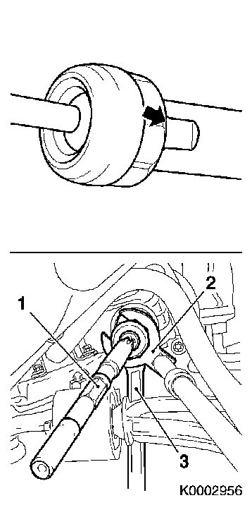

Track Rod
Track rodTo remove
1. Remove the front wheel.
5 x Unscrew bolt
2. Remove the track rod end. see Track rod, outer.
3. Remove the rubber gaiter. see Gaiter, steering gear.
Important: Grip the steering gear rack when removing/tightening the track rod thrust joint, in order to avoid damaging the rack. Wrench surface for counterstay on the rack is only on the gear side. For this reason, when removing/fitting the opposite track rod, both rubber gaiters must be removed from the steering gear.

4. Remove the track rod (1).
Unscrew using KM-6321 (89 97 009 Special wrench for EHPS and B284, 89 96 837 Special wrench for others) (2) - Grip the rack by the flats (arrow) with an open wrench (3).
To fit
5. Important: Grip the steering gear rack when removing/tightening the track rod thrust joint, in order to avoid damaging the rack. Wrench surface for counterstay on the rack is only on the gear side. For this reason, when removing/fitting the opposite track rod, both rubber gaiters must be removed from the steering gear.
Fit the track rod (1).
Tighten using KM-6321 (89 97 009 Special wrench for EHPS and B284, 89 96 837 Special wrench for others) (2) (90 Nm) - Grip the rack by the flats (arrow) with an open wrench (3).

6. Fit the rubber gaiter and outer track rod. see Gaiter, steering gear.
7. Fit the front wheel.
Checking/inspection
8. Check Wheel angles and adjust if necessary, see Wheel alignment.